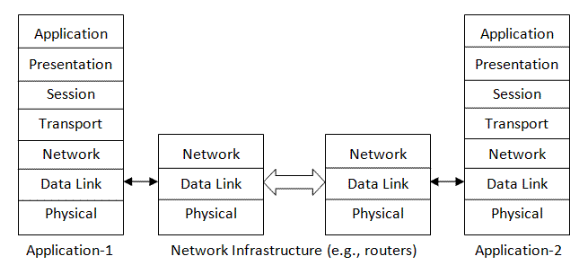

Java Programming
Networking
Networking Fundamentals
Latency & Bandwidth
Latency is the time (delay) it takes for a package of data to travel from its source to its destination. It depends on the travel distance and the speed of traveling.
Bandwidth is the number of bytes that can be transferred in a unit of time, usually measured in terms of kbps (kilo bits per second).
Package Switching Network
[PENDING]
ISO/OSI 7-layer Networking Model
OSI Model vs. TCP/IP
TCP
TCP is a reliable, in-order transport protocol. Every package send by the source is guaranteed to arrive at its destination in the same order as it was sent. The limitation for TCP/IP is there can only be one sender and one receiver. Multicasting is not supported.
UDP
UDP does not guarantee the order of package delivery, it does not even guarantee that a package will be delivered to its destination. UDP is simpler than TCP, with less overhead (shorter header and no package sequence number, no re-transmission). It is often used for delivering video/voice over a IP network (VoIP). UDP supports multicast, where one package can be received by everyone joining the multicast group (within the time-to-live number of hops from the sender).
Socket (or Port)
Socket is a end-point for networking communication. TCP and UDP supports 64K sockets, from socket number 0 to socket number 65,535. Socket number between 0 to 1023 are reserved for popular application protocols (e.g., Port 80 for HTTP, Port 443 for HTTPS, Port 21 for FTP, Port 23 for Telnet, Port 25 for SMTP, Port 110 for POP3, etc. See http://www.iana.org/assignments/port-numbers). Port number on and above 1024 are available for your testing.
Java Networking (java.net)
Java supports the following type of sockets in package java.net:
ServerSocketandSocketfor TCPDatagramSocketfor UDPMulticastSocketfor UDP multicasting
TCP & ServerSocket/Socket
Java distinguishes between the server and client for TCP/IP communication. Let's begin with the server-side programming.
java.net provide a ServerSocket class, which acts as a socket factory for the server. The server first instantiate a ServerSocket, and invoke its accept() method to listen for a client's connection. The accept() blocks until a connection is made. It returns a new Socket once connected. The returned Socket can then be used for transferring data to/from the clients by openning an InputStream and OutputStream from the Socket.
Example: A simple TCP-based server
import java.io.*; import java.net.ServerSocket; import java.net.Socket; /** * A simple server socket listener that listens to port number 8888, and prints * whatever received to the console. */ public class SimpleSocketListener { ServerSocket server; int serverPort = 8888; // Constructor to allocate a ServerSocket listening at the given port. public SimpleSocketListener() { try { server = new ServerSocket(serverPort); System.out.println("ServerSocket: " + server); } catch (IOException e) { e.printStackTrace(); } } // Start listening. private void listen() { while (true) { // run until you terminate the program try { // Wait for connection. Block until a connection is made. Socket socket = server.accept(); System.out.println("Socket: " + socket); InputStream in = socket.getInputStream(); int byteRead; // Block until the client closes the connection (i.e., read() returns -1) while ((byteRead = in.read()) != -1) { System.out.print((char)byteRead); } } catch (IOException e) { e.printStackTrace(); } } } public static void main(String[] args) { new SimpleSocketListener().listen(); // Start the server and listening } }
Start the server and try to connect to the server via telnet. (On Vista, telnet is not installed by default, goto "control panel" ⇒ "program and feature" ⇒ "turn windows feature on and off" ⇒ "telnet client".)
> telnet localhost 8888 telnet> enter some texts
The above server has a problem, it can only process a single client (try starting two telnet clients), as the read() IO operation blocks until the connection is closed.
Example: In this example, we start a thread for each connection to perform IO operations.
import java.io.*; import java.net.ServerSocket; import java.net.Socket; /** * A simple server socket listener that listens to port number 8888, and prints * whatever received to the console. It starts a thread for each connection to * perform IO operations. */ public class SimpleThreadedSocketListener { ServerSocket server; int serverPort = 8888; // Constructor to allocate a ServerSocket listening at the given port. public SimpleThreadedSocketListener() { try { server = new ServerSocket(serverPort); System.out.println("ServerSocket: " + server); } catch (IOException e) { e.printStackTrace(); } } // Start listening. private void listen() { while (true) { // run until you terminate the program try { // Wait for connection. Block until a connection is made. Socket socket = server.accept(); System.out.println("Socket: " + socket); // Start a new thread for each client to perform block-IO operations. new ClientThread(socket).start(); } catch (IOException e) { e.printStackTrace(); } } } public static void main(String[] args) { new SimpleThreadedSocketListener().listen(); } // Fork out a thread for each connected client to perform block-IO class ClientThread extends Thread { Socket socket; public ClientThread(Socket socket) { this.socket = socket; } @Override public void run() { InputStream in; try { in = socket.getInputStream(); int byteRead; // Block until the client closes the connection, results in read() returns -1 while ((byteRead = in.read()) != -1) { System.out.print((char)byteRead); } } catch (IOException e) { e.printStackTrace(); } } } }
Let's write our own client using java.net.Socket to establish a connection with the server. This client is a swing application, which allow user to enter texts into a text field, and send to the server.
import java.awt.*r; import java.awt.event.*; import java.io.*; import java.net.Socket; import java.net.*; import javax.swing.*; /** * A simple client used to connect to the server */ public class SimpleClient extends JFrame implements ActionListener { Socket client = null; String serverAddr = "localhost"; int serverPort = 8888; PrintWriter out; JTextField tf; public SimpleClient() { try { client = new Socket(serverAddr, serverPort); System.out.println("Client: " + client); out = new PrintWriter(client.getOutputStream()); out.println("Hello"); out.flush(); // need to flush a short message } catch (UnknownHostException e) { e.printStackTrace(); } catch (IOException e) { e.printStackTrace(); } // Set up the UI Container cp = this.getContentPane(); cp.setLayout(new FlowLayout(FlowLayout.LEFT, 15, 15)); cp.add(new JLabel("Enter your message or \"quit\"")); tf = new JTextField(40); tf.addActionListener(this); cp.add(tf); this.setDefaultCloseOperation(EXIT_ON_CLOSE); this.pack(); this.setTitle("Simple Client"); this.setVisible(true); } @Override public void actionPerformed(ActionEvent e) { String message = tf.getText(); if (message.equals("quit")) { // Need to close the socket to orderly disconnect from the server try { out.close(); client.close(); System.exit(0); } catch (IOException e1) { e1.printStackTrace(); } } else { // Send the message entered to the network socket out.println(message); out.flush(); tf.setText(""); } } public static void main(String[] args) { new SimpleClient(); } }
UDP & DatagramSocket
[PENDING]
Multicasting & MulticastSocket
Mulitcast is organized in a so-called multicast group, that uses a speical IP adress in the range of 224.0.0.1 to 239.255.255.255. When a program sends a multicast datagram to a group, all the participants to the multicast group will receive it.
Time-to-live: the maximum number of hops (i.e., subnet boundaries) that a package can travel. Set to 1 if the package is only required within the same subnet.
[PENDING]
New IO's Networking (JDK 1.4)
The one-thread-per-socket (because of the block-IO operation) works well for small server processing a few connection, but cannot handle hundreds or thousands of connections. Furthermore, the Standard IO's streams (i.e., InputStream and OutputStream) do not support direct buffer (mapping to OS buffer directly), results in heavy overhead. New IO, introduced in JDK 1.4, attempt to resolve these problems.
REFERENCES & RESOURCES
- [PENDING]
Latest version tested: JDK 1.6
Last modified: September 1, 2008